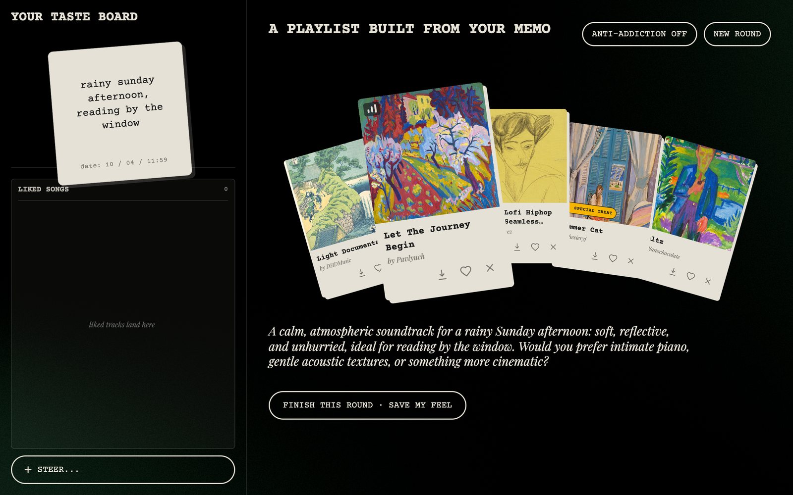
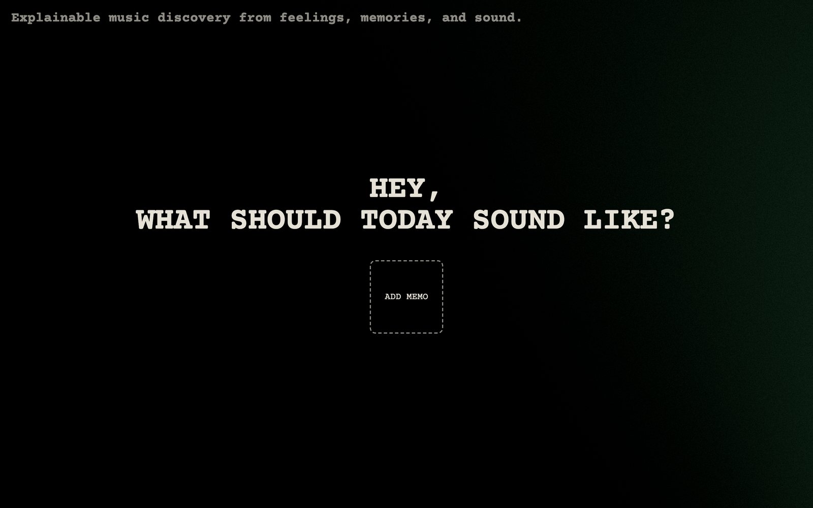
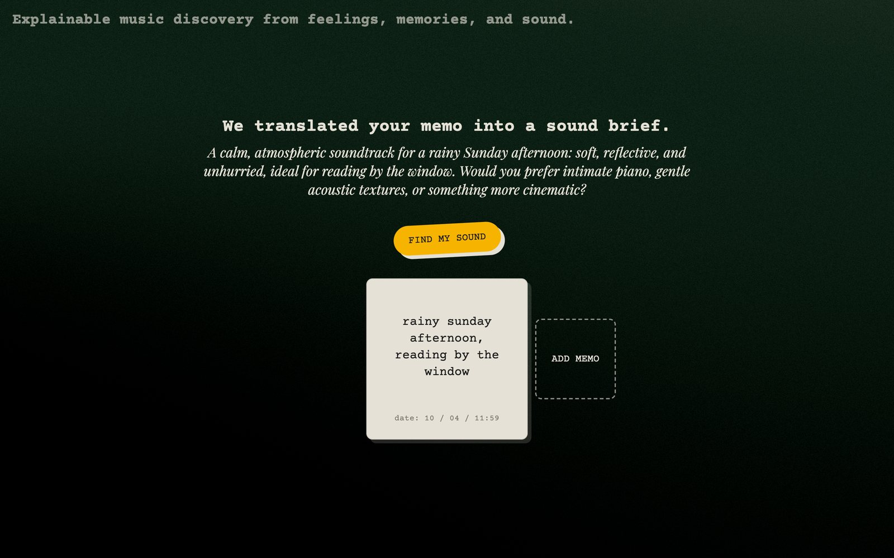
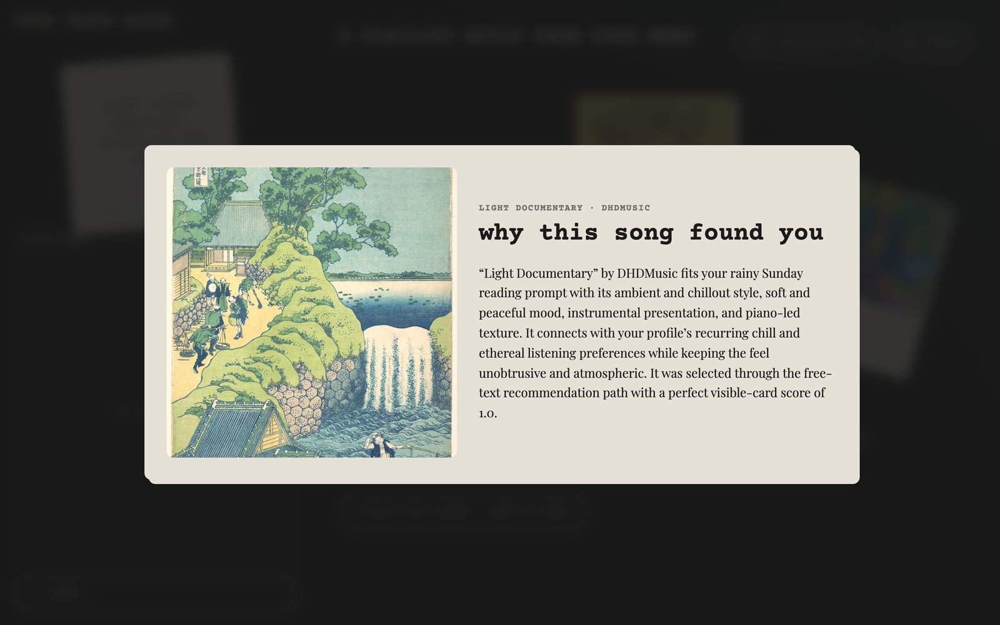
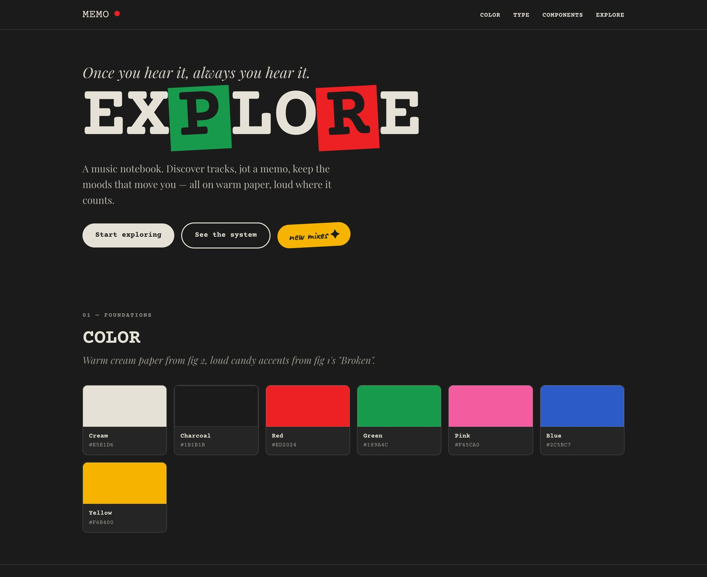
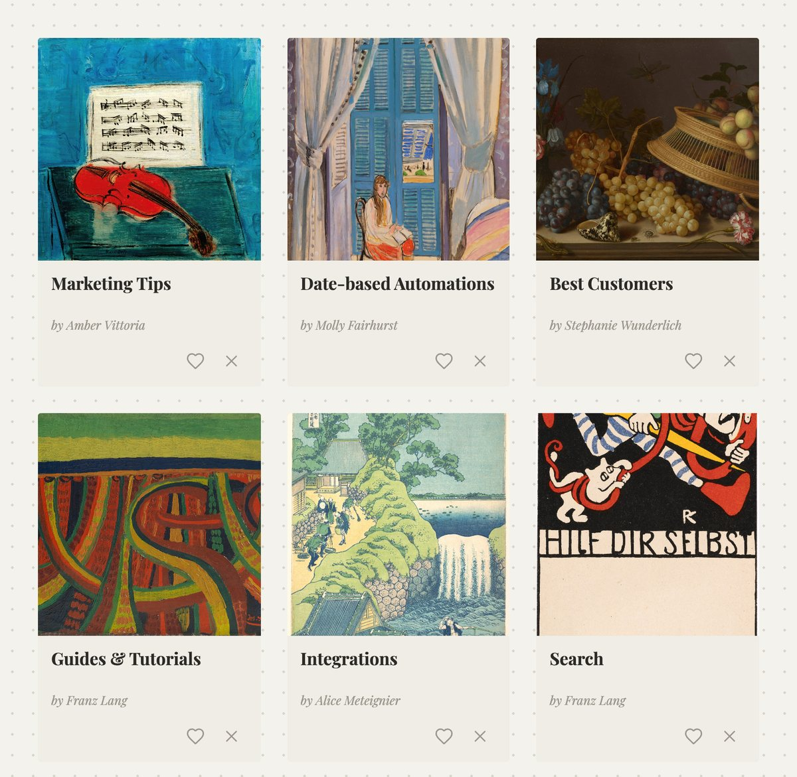

Most music recommenders are a black box: they hand you a playlist but never tell you why. Built at HACKATUNE 2026 (Munich Music Labs × Cyanite), Sounds Like You is an audio-first, explainable music discovery app. A listener jots down a messy feeling as a paper memo; an LLM translates it into a readable sound brief that the user confirms before any search runs. Every recommended track then comes with a grounded answer to “why this song found you”, and likes and dislikes quietly shape a taste memory for the next round.

Role
Product & Interaction Designer, Design System, Front-end Prototyper
year
2026.06 – ongoing
KEY WORDS
Explainable AI, Human-AI Interaction, LLM, Music Recommendation
Deliverables
Design System, Full-stack Web App (React + FastAPI)
team member
Hewei Gao, Baihong Bao, Yihao Wang, @CAgGen
project link
↗ GitHub
challenge
Describe A Feeling, Not A Genre
Cyanite set the hackathon challenge: build audio-first, explainable music discovery on top of their music search and tagging technology. People rarely ask for music by genre or BPM. They say things like “lonely midnight train ride” or “rainy Sunday, reading by the window”. The question we explored: how can an AI turn vague, emotional language into music, while keeping the user in control and the reasoning visible?
Two Moments Of Explanation
We designed the experience around two explicit moments where the system explains itself: first, it shows how it understood the request before searching; second, it explains why each track was chosen, grounded in the track's audio tags rather than popularity or collaborative filtering.
interaction flow
01 · Memo
Start With A Note
The app opens with a single question: “Hey, what should today sound like?” Instead of a search bar, users add a paper memo and write their mood, scene, or memory in their own words.

02 · Sound brief
Confirm Before Searching
An LLM compiles the memo into a plain-language sound brief. The system stops here: if the interpretation is off, the user adds another memo to steer it, and the brief is recompiled. Nothing is searched until the user is happy with how they were understood.

03 · Playlist
A Fan Of Cards
The playlist arrives as a fan of artwork cards next to the user's taste board. Each card can be previewed, liked, or dismissed. Likes are stored as evidence of the sound the user wants; a dislike removes the card and refills the slot with a track similar to what the user already liked.
04 · Why this song
Why This Song Found You
Opening a card reveals a short, grounded explanation that links the track's tags back to the user's memo and taste profile. When a round is finished, the liked tracks and final prompt are written into a markdown taste memory. No database is needed, and the profile stays human-readable.

design system
Memo · Music Explore
I created the design system and UI mockups the front-end is built on. The visual language fuses a heavy “Broken” display specimen with a warm editorial portfolio: a charcoal stage with cream paper, a strict seven-color palette of candy-bright accents, and two type voices. Courier Prime, a typewriter mono, carries the UI and the memos, and Playfair Display whispers the AI's editorial explanations.

The tokens live in one JavaScript source of truth shared by the static mockups and a React component library, so the music cards, memos, buttons, and tags stay consistent from mockup to product.

technical roadmap
Architecture
A React + TypeScript front-end talks to a FastAPI backend whose orchestrator runs the loop: intent compilation → confirmation gate → catalog search → feedback refill → explanation → memory. Session state lives in memory, and cross-session taste memory is two markdown files per user.
Keeping It Alive
After the event, the sponsor API was switched off and the hackathon build stopped working. I am carrying the project forward: search was re-implemented against a self-contained local catalog of 2,401 public Jamendo tracks, so the demo runs with no API key and no external dependency. I am continuing to refine the front-end and interaction design.
Credit to the original HACKATUNE team for the confirmation gate, the feedback loop, the taste-memory model, and the explanation system. Their work lives on in Hurwitzzz/resonat_hackatune.